| ・ 3次元画像コンファレンス2016 @ 関大大学 (H28.7.13-14) | |||
M2のTNくんが光計測の研究で「トモグラフィッックディジタルホログラフィ法における粒子同定方法の改善」という題目で3次元画像コンファレンス2016においてポスター発表しました．最近はどの学会でも学生のポスターが増えてきました．口頭発表メインだったTNくんは，春の関西からポスター形式でいろんな人と議論できる点を気に入っているようです．今回の撮影はTNくんです． |
|||
|
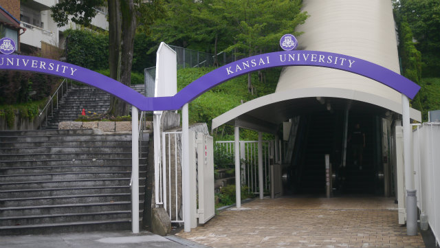
さすが私立大学 |
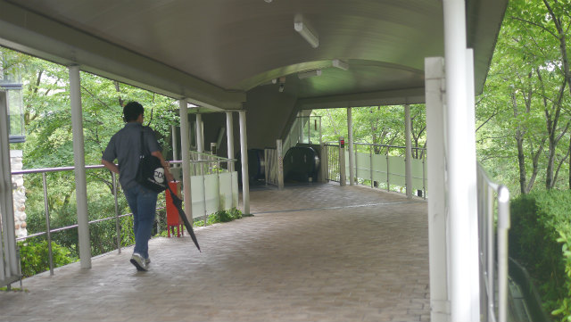
屋根は嬉しいね | ||
|
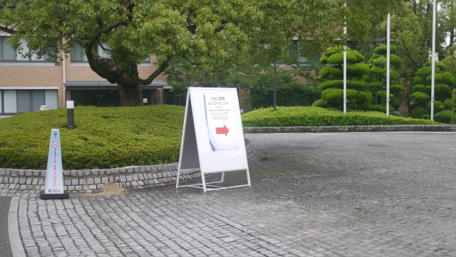
ふつうA型看板は自作しません |
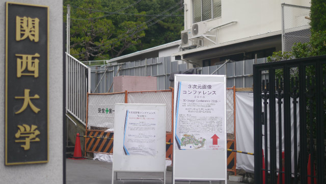
文字はカッティングで作ったりもしない | ||
|
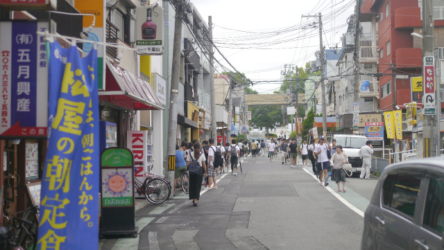
大学前のにぎわい |
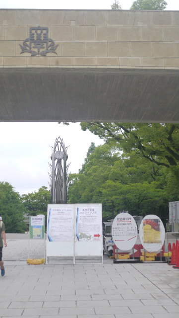
ウチに門はないけどレインボーがある | ||
|
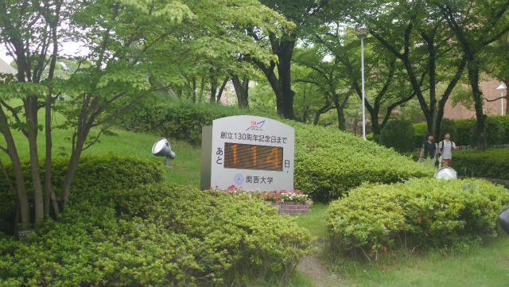
ウチなら自作する |
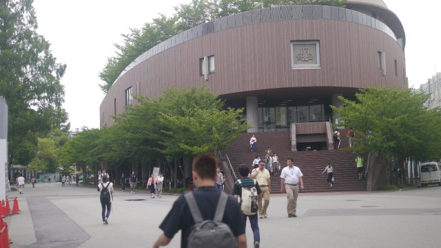
屋上庭園は無理だけど庭園は自作してるし | ||
|
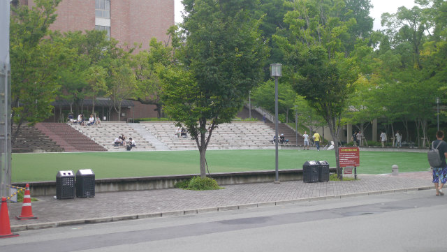
芝生は手入れ大変なので勘弁して |
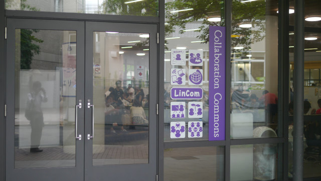
実質プラザKITみたいな | ||
|
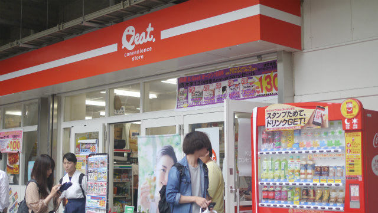
実質松ヶ崎駅までキャンパスと考えたらローソンあるしツタヤもある |
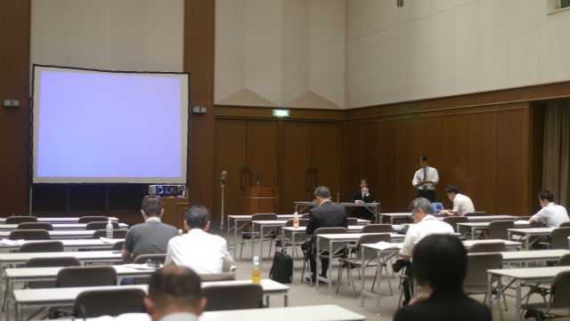
フラッシュトーク会場 | ||
|
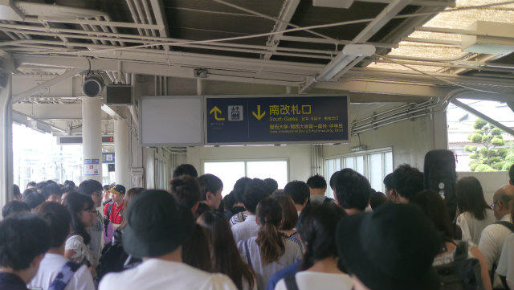
これは大変そう |
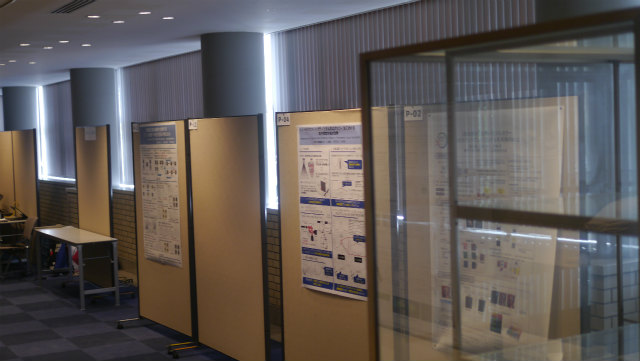
ポスター掲示完了 | ||
|
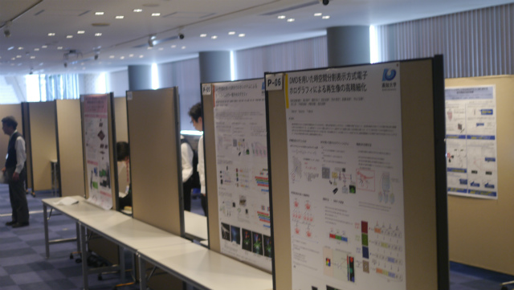
言ったら机用意してもらえる？ |
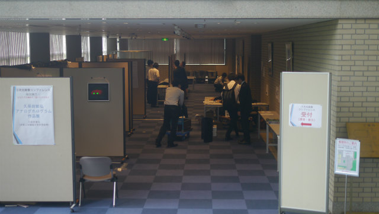
準備完了 | ||
|
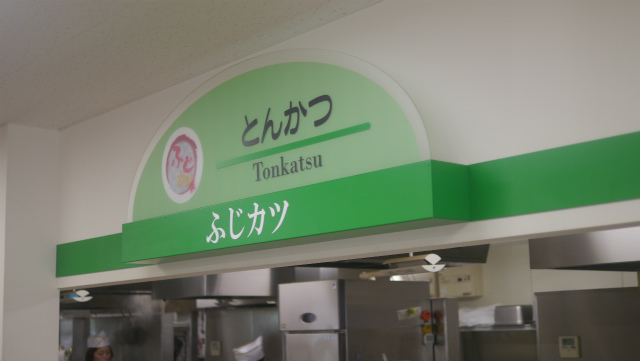
ふじカツｗ |
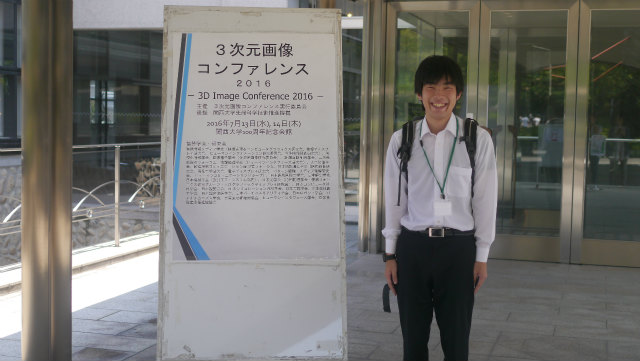
定番の看板との写真（他の人にお願いしてます） | ||